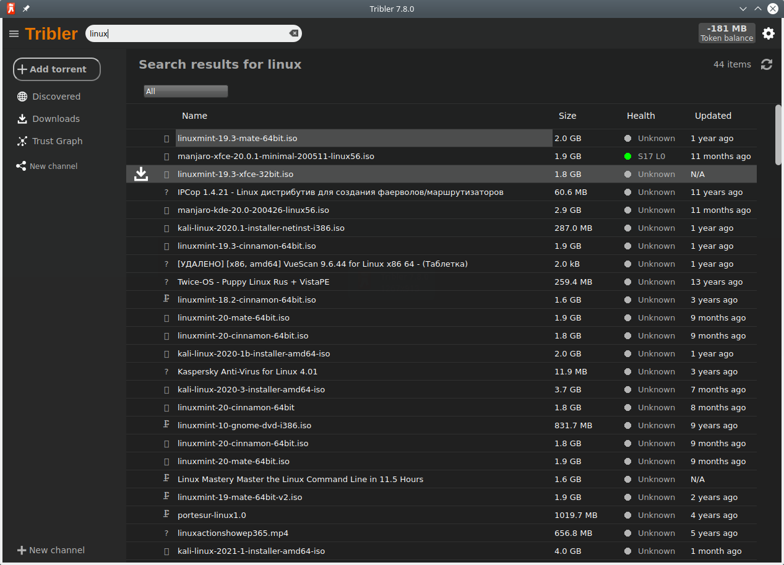

Tribler
Autor: Diogo Menechini Falqueto
O que é ?
Anuncio
O Tribler é um cliente de torrent anonimo. Ele usa uma imprementação própria da rede Onion (Tor Browser) para garantir o anonimato. Obs: O anonimato do tribler ainda não esta maduro, ele foi feito para te proteger de agencias de advogados, não do governo. Não faça merda! Ao usa-lo o seu trafeco vai passar por outros nós (computadores de outras pessoas rodando o tribler) antes de se conectar nos semeadores. A quantidade de nós vai depender da configuração de privacidade sua, quanto maior, mais nós. Você tambem pode semear torrents anonimamente com o semeador oucuto (recurso experimental) assim criptografando os dados em ambas as partes. Processo semelhante aos sites da rede onion.
O Tribler é open source e esta no GitHub, no link: https://github.com/Tribler/tribler
O Tribler possui um sistema de busca por torrents P2P, onde você pode obter links de torrents diretamente de outros usuarios. Consumir conteúdo
Ao clicar nos resultados da pesquisa, você também pode selecionar "Stream". Isso ativa o player de vídeo e áudio integrado. Não há necessidade de esperar que os downloads sejam concluídos, com streaming você pode usar o Bittorrent no estilo Youtube.
Sua reputação
Ao clicar no ícone de confiança, você pode ver sua posição na rede. Tribler usa um blockchain à prova de adulteração para acompanhar o que você dá e recebe da rede. Você pode aumentar sua reputação enviando conteúdo para outras pessoas. Links magnéticos
Canais
Os canais são um monte de torrents gerenciados por um usuário como você. Use "marcar como favorito" para se manter atualizado com todo o conteúdo de um canal. Isso também sinaliza aos outros automaticamente que este é um canal legal e evita spam.
Todos podem iniciar seu próprio canal a partir do Tribler. Compartilhe de dezenas a 12.000 torrents com o mundo inteiro. O torrent recém-adicionado se espalhou para todos os assinantes em minutos.
Vantagens e Desvantagens
- Vantagens:
- Torrents anonimos
- Mais privacidade
- Open Source
- Desvantagens:
- Falta de recursos
- Sem fila de downloads
- Torrents mais lentos, limite de 100 Mbps
Instalação
Instalar flatpak:
sudo pacman -S flatpak
Instalar tribler com flatpak:
sudo flatpak install tribler
Depois de permissão para acessar o sistema de arquivos com o comando:
sudo flatpak override org.tribler.Tribler --filesystem=host
Conclução
Dependendo das suas prioridades, usar ele pode valer apena. Você deve analisar a situação com cauma e decidir se vai usar ou não. Não é necessario usalo constantimente, você pode usar somente quando precisar de mais privacidade.
fontes: Wikipedia e tribler.org